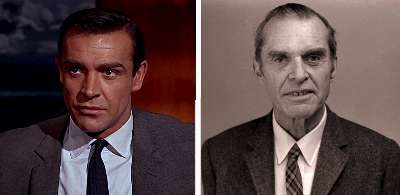

Борис Акунин
Мой календарь
Настоящий Джеймс Бонд не имел лицензии на убийство и за всю свою жизнь не обидел даже пташки. Наоборот, он любил пташек больше всего на свете.
Так звали знаменитого орнитолога, день рождения которого сегодня отмечается. Его имя Ян Флеминг украл и много лет использовал в своих романах.
Кража произошла в 1953 году. Флеминг в то время жил на Ямайке, писал «Казино Руайяль», первую историю из саги о суперагенте. Настольной книгой у Флеминга, который являлся страстным «бёрд-вотчером» (орнитологом-любителем), была классическая штудия профессора Бонда о птицах Карибского региона. Оттуда, с обложки, Флеминг имя и позаимствовал.
Потом, когда оно прогремит на весь мир, писатель принесет орнитологу извинения, подарит экземпляр «Живешь только дважды» с надписью «Настоящему Джеймсу Бонду от похитителя его идентичности» и предоставит право, в свою очередь, использовать фамилию «Флеминг», чтобы назвать самую уродливую птицу на свете.
Громкая слава шебутного тезки очень портила серьезному ученому жизнь. Всякое его выступление на научной конференции вызывало несолидное оживление в зале. Постоянное шуткование окружающих, мягко говоря, доставало. Но орнитолог не подал на писателя в суд, он был человек неконфликтный. The real James Bond воспринимал эту докуку с юмором. Когда столько лет занимаешься пернатыми, привыкаешь смотреть на всё с высоты птичьего полета.
Мораль этой истории такова.
Во-первых, будьте
Во-вторых, относитесь ко всем докукам с юмором.